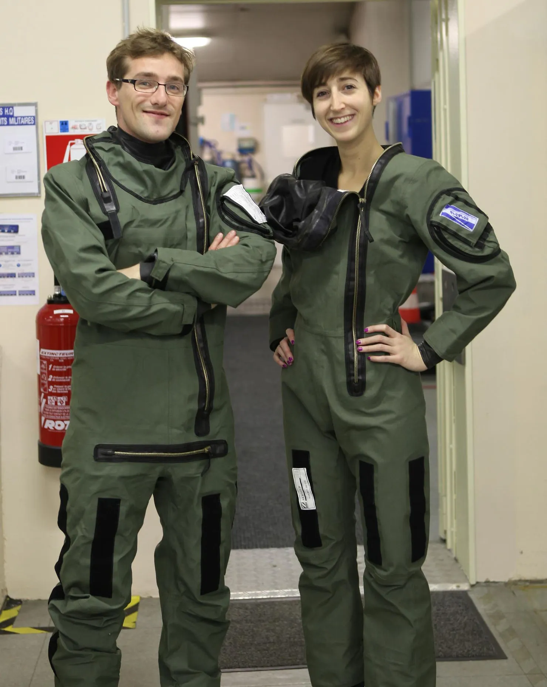
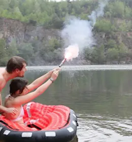
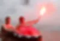
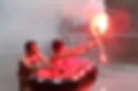

Ca y est, on reçoit enfin notre matériel de survie, de notre sponsor ZODIAC AEROSPACE ! Il est temps de le tester en conditions réelles.

Pour les combinaisons, nous les essayons en kaki, comme celle des pilotes de chasse. Mais après réflexion, il nous parait plus sage de nous distinguer d'eux, et en plus on recherche l'inverse de leurs objectifs : eux cherchent le camouflage, alors que nous on cherche à être repérés en cas de crash ! On opte donc pour une couleur orange, la seule que l'on ne trouvera nulle part dans la nature : ainsi en cas de crash, que l'on soit sur de la glace, dans l'océan, dans le désert ou dans la jungle, le orange se distinguera toujours !

Pour les canots de sauvetage et fusées de détresse, on se jette à l'eau, et en un temps chronométré on monte dans le canot et allumons le matériel. C'est après avoir effectué le test, qu'on a réalisé son caractère indispensable : il y a plusieurs réflexes à avoir, pour ne pas mettre le feu à son canot en quelques secondes ;)

